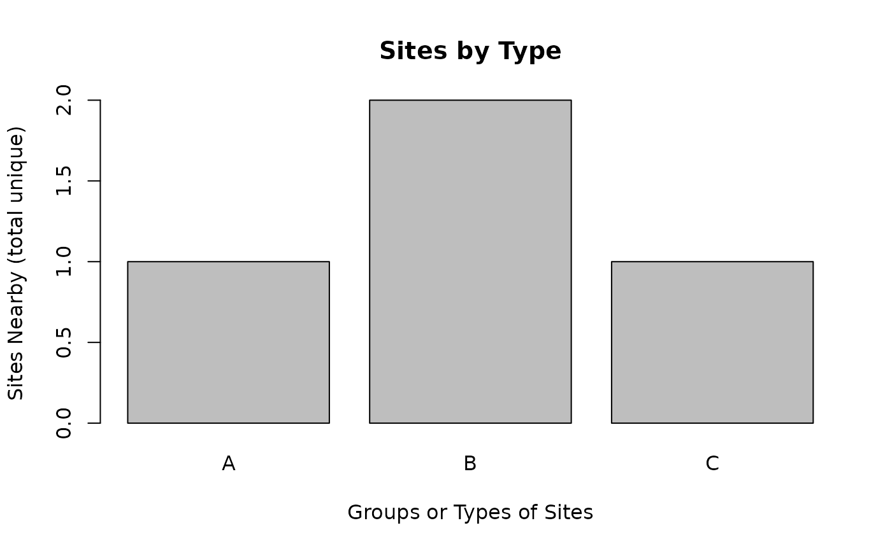

Barplot comparing groups of sites on 1 indicator, for output of ejamit_compare_types_of_places() easy high-level function for getting a quick look at top few groups of sites
Source:R/ejam2barplot_sites.R
ejam2barplot_sitegroups.RdBarplot comparing groups of sites on 1 indicator, for output of ejamit_compare_types_of_places() easy high-level function for getting a quick look at top few groups of sites
Usage
ejam2barplot_sitegroups(
ejamitout,
varname = "pctlowinc",
names.arg = NULL,
main = "Sites by Type",
xlab = "Groups or Types of Sites",
ylab = NULL,
sortby = NULL,
topn = 10,
...
)Arguments
- ejamitout
list that is output of ejamit_compare_types_of_places(), where one element is a table named results_bytype
- varname
name of a column in results_bytype, bar height
- names.arg
optional vector of labels on the bars, like the types of sites represented by each group
- main
optional, for barplot
- xlab
optional, for barplot
- ylab
optional, for barplot, plain English version of varname, indicator that is bar height
- sortby
set to FALSE if you want to have no sorting, or to an increasing vector that provides the sort order
- topn
optional, show only the top n groups (site types) – Does not show all by default – only shows top n groups.
- ...
passed to barplot()
Value
same as barplot()
Details
see ejamit_compare_types_of_places() for more examples
Examples
out <- ejamit_compare_types_of_places(testpoints_10[1:4, ],
typeofsite <- c("A", "B", "B", "C"))
#> Type 1 of 3 = A -- Analyzing 1 points, radius of 3 miles around each.
#> Finished 1 of 1 sites. Rate of 2,927 buffers per hour: 1 lat/long pairs took 1 seconds
#> Type 2 of 3 = B --
#> Note that ejam_uniq_id was already in sitepoints, and might not be 1:NROW(sitepoints), which might cause issues
#> Analyzing 2 points, radius of 3 miles around each.
#> Finished 3 of 3 sites. Rate of 2,621 buffers per hour: 3 lat/long pairs took 4 seconds
#> Type 3 of 3 = C --
#> Note that ejam_uniq_id was already in sitepoints, and might not be 1:NROW(sitepoints), which might cause issues
#> Analyzing 1 points, radius of 3 miles around each.
#> Finished 4 of 4 sites. Rate of 2,557 buffers per hour: 4 lat/long pairs took 6 seconds
#>
#>
#> type valid sitecount pctvalid pop pop_persite pctofallpop
#> 1 A 1 1 100 124566 124566 9
#> 2 B 2 2 100 1176931 588466 89
#> 3 C 1 1 100 19637 19637 1
#> pctofallsitecount
#> 1 25
#> 2 50
#> 3 25
#> ratio.to.state.avg.Demog.Index ratio.to.state.avg.Demog.Index.Supp
#> 1 0.9 0.8
#> 2 1.2 1.0
#> 3 0.7 0.9
#> ratio.to.state.avg.pctlowinc ratio.to.state.avg.pctlingiso
#> 1 0.5 1.2
#> 2 1.1 1.0
#> 3 0.8 0.7
#> ratio.to.state.avg.pctunemployed ratio.to.state.avg.pctlths
#> 1 0.6 0.7
#> 2 1.1 1.0
#> 3 1.0 1.0
#> ratio.to.state.avg.pctunder5 ratio.to.state.avg.pctover64
#> 1 0.9 1.1
#> 2 1.2 0.7
#> 3 1.2 0.8
#> ratio.to.state.avg.pctmin
#> 1 1.2
#> 2 1.2
#> 3 0.6
#> Use ejam2excel(out) to view results, and see the types of sites compared, one row each, in the Overall tab
#> Use ejam2barplot_sitegroups() to plot results.
#>
#>
#> 4 sites in 3 groups (types of sites).
#> Rate of 2,552 buffers per hour: 4 lat/long pairs took 6 seconds
cbind(Rows_or_length = sapply(out, NROW))
#> Rows_or_length
#> types 3
#> sitecount_bytype 3
#> results_bytype 3
#> results_overall 3
#> ejam_uniq_id 4
#> typeofsite 4
#> results_bysite 4
#> longnames 417
#> validstats 3
#> ratiostats 3
ejam2barplot_sitegroups(out, "sitecount_unique", topn=3, sortby = F)
